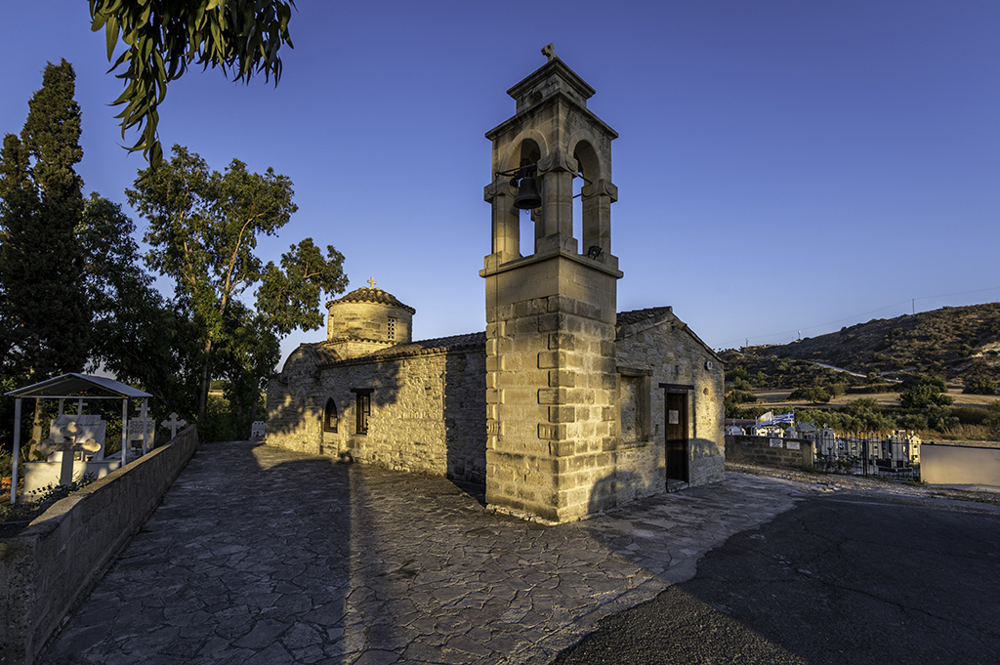
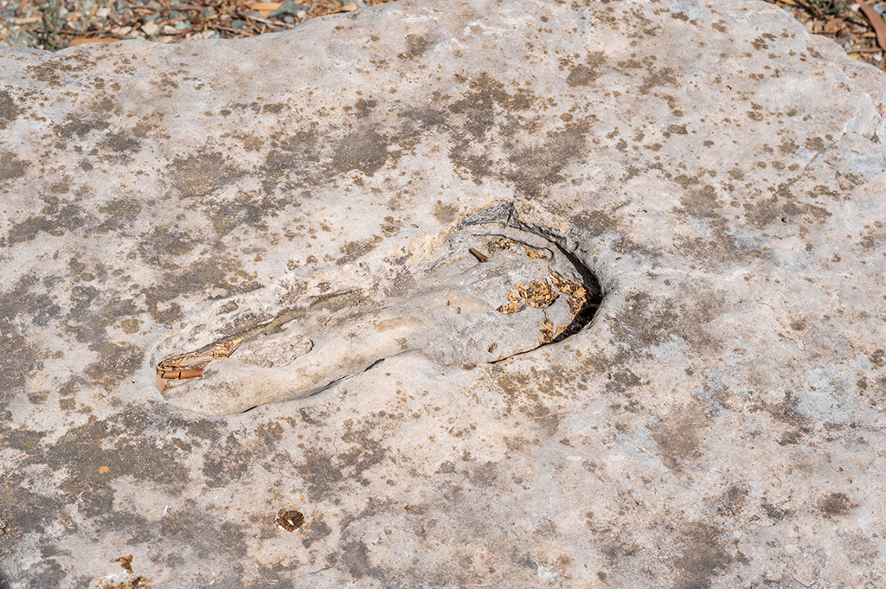

The Byzantine church of Agios Mamas is located south and not far from the new, large church
dedicated to the same saint.
This single-aisled domed building belongs to the ‘compressed cross-in-square’ type of church,
the eastern part of which is the earliest, probably dated to the 12th century. The western part
of the monument and the bell-tower were added later in the Middle Ages and in modern times.
Ο βυζαντινός ναός του Αγίου Μάμα βρίσκεται σε μικρή απόσταση νότια του σημερινού μεγάλου ναού
αφιερωμένου στον ίδιο Άγιο.
Πρόκειται για συνεπτυγμένο εγγεγραμμένο σταυροειδή ναό με τρούλο, το αρχαιότερο τμήμα του οποίου
είναι το ανατολικό, ενδεχομένως κτίσμα του 12ου αιώνα. Στο μικρό μονόχωρο ναό προσαρτήθηκε κατά
τους μεσαιωνικούς και νεότερους χρόνους το δυτικό τμήμα του μνημείου και το καμπαναριό.
Ayios Mamas Bizans kilisesi, azize adanmış yeni büyük kilisenin güneyinde çok uzak olmayan bir mesafede bulunmaktadır. Bu tek koridolu kubbeli bina, 'Kapalı Yunan Haçı planı' tipine ait. Doğu kısmı ise en eski olanıdır ve muhtemelen 12. yüzyıla tarihlenmektedir. Anıtın batı kısmı ve çan kulesi daha sonra Orta Çağ'da ve modern zamanlarda eklenmiştir.
When entering the church, you will notice that only fragments of wall paintings, such as Christ Pantocrator, are visible on the dome, while human intervention to the building in later periods resulted in the covering of other parts of the church’s iconographic programme with cement mortar. Later interventions include the opening of new and the modification of the original openings, such as the pointed arch above the main entrance on the south wall and the conversion of the western blind arch of the north wall of the original church into a large pointed window.
Καθώς εισέρχεστε στο ναό διαπιστώνετε ότι ελάχιστα σπαράγματα τοιχογραφιών σώζονται σήμερα στον τρούλο, στον οποίο διακρίνεται ο Παντοκράτορας, ενώ άλλα μέρη του διακόσμου καλύφθηκαν με τσιμεντοκονίαμα, αποτέλεσμα της ανθρώπινης επέμβασης στη διάρκεια των αιώνων. Μεταγενέστερες επεμβάσεις αποτελούν επίσης η διάνοιξη νέων και η μετασκευή των αρχικών ανοιγμάτων, όπως το οξυκόρυφο τόξο πάνω από την κύρια είσοδο του νότιου τοίχου και η μετατροπή του δυτικού τυφλού τόξου του βόρειου τοίχου του αρχικού ναού σε μεγάλο οξυκόρυφο παράθυρο.
Kiliseye girdiğinizde, kubbede Herşeye Kadir İsa’nın resmi gibi sadece duvar resmi parçalarının göründüğünü, daha sonraki dönemlerde binaya insan müdahalesinin ise kilisenin dekorunun diğer bölümlerinin çimento harcı ile kaplanmasıyla sonuçlandığını fark edeceksiniz. Daha sonraki müdahalelerin arasında, güney duvardaki ana girişin üzerindeki sivri kemer gibi yeni açıklıkların açılması ve asıl açıklıkların modifikasyonu ve orijinal kilisenin kuzey duvarının batı kör kemerinin büyük bir sivri pencereye dönüştürülmesi bulunmaktadır.
The cult of Agios Mamas, patron of agropastoral activities and “protector and guardian of Cypriots”, according to one of the saint’s introits, is particularly popular on the island. The Xeros valley, a predominantly rural region, hosted the saint’s cult in this church at Alaminos for a rather long period. As you can observe yourselves, the range of interventions to the monument since the Middle Ages testify to its continuous use, while revealing the needs of the faithful and their response to changing architectural trends through time. From the Ottoman period to 1974, Agios Mamas was the parish church of the Christian population of the mixed village of Alaminos, who resided in the Greek-Cypriot quarter along the west bank of the Xeros. In the courtyard to the northwest of the monument, you can see a large flat piece of rock with a footprint, brought to the site a few years ago. According to local tradition, the footprint belongs to Agios Mamas, who stood on the rock at the top of a neighbouring hill in order to surveil the coast and protect the inhabitants from the Saracens.
Ο Άγιος Μάμας, «φύλαξ και φρουρός των Κυπρίων» σύμφωνα με Απολυτίκιο του Αγίου, είναι ιδιαίτερα αγαπητός στην Κύπρο και θεωρείται προστάτης των γεωργοκτηνοτροφικών ασχολιών. Η κοιλάδα του Ξερού, τόπος κατεξοχήν αγροτικός, φιλοξένησε τη λατρεία του στον ναό της Αλαμινού σε μεγάλη διάρκεια χρόνου, όπως παρατηρείτε από τις επεμβάσεις που δέχτηκε το μνημείο από τα μεσαιωνικά χρόνια μέχρι σήμερα, εξυπηρετώντας τις ανάγκες των πιστών και ακολουθώντας σε κάποιες περιπτώσεις τις αρχιτεκτονικές τάσεις της εποχής. Από τους οθωμανικούς χρόνους μέχρι το 1974, ο Άγιος Μάμας υπήρξε ενοριακός ναός του χριστιανικού πληθυσμού του μικτού χωριού της Αλαμινού, ο οποίος κατοικούσε στη συνοικία κατά μήκος της δυτικής όχθης του Ξερού. Στον προαύλιο χώρο του μνημείου στα βορειοδυτικά μπορείτε να δείτε μεγάλο επίπεδο κομμάτι βράχου στο οποίο διακρίνεται αποτύπωμα ποδιού. Ο βράχος μεταφέρθηκε στο χώρο πριν μερικά χρόνια. Σύμφωνα με τοπική παράδοση, το αποτύπωμα ανήκει στον Άγιο Μάμα, ο οποίος στεκόταν στο βράχο στην κορυφή γειτονικού λόφου και παρατηρούσε την ακτογραμμή προκειμένου να προστατέψει τους κατοίκους από τους Σαρακηνούς.
Aziz için söylenen ilahilerden birine göre, tarımsal faaliyetlerin koruyucusu ve "Kıbrıslıların koruyucusu ve muhafızı" olan Ayios Mamas’ın ibadet edilmesi adada özellikle popülerdir. Ağırlıklı olarak kırsal bir bölge olan Kseros vadisi, Alaminos'taki bu kilisede oldukça uzun bir süre azizin ibadet edilmesine ev sahipliği yaptı. Kendinizin de gözlemleyebileceğiniz gibi, Orta Çağ'dan bu yana anıta yapılan müdahalelerin çeşitliliği, inançlıların ihtiyaçlarını ve zaman içinde değişen mimari eğilimlere tepkilerini ortaya çıkarırken, onun sürekli kullanımına tanıklık ediyor. Osmanlı döneminden 1974'e kadar Ayios Mamas kilisesi, karma köy olan Alaminos köyünün Kseros'un batı yakasındaki Kıbrıs Rum mahallesinde ikamet eden Hristiyan nüfusunun cemaat kilisesiydi. Anıtın kuzeybatısındaki avluda, birkaç yıl önce alana getirilmiş, ayak izine sahip büyük, düz bir kaya parçası görebilirsiniz. Yerel geleneğe göre ayak izi, sahili gözetlemek ve sakinleri Sarazenlerden korumak için cıvarda bir tepenin tepesindeki kayanın üzerinde duran Ayios Mamas'a aittir.